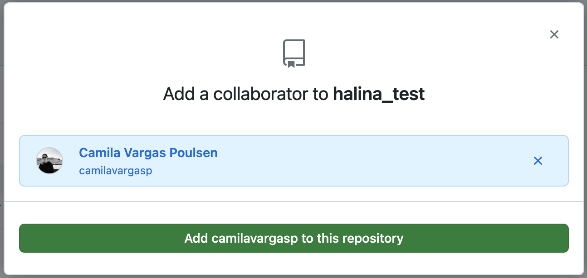
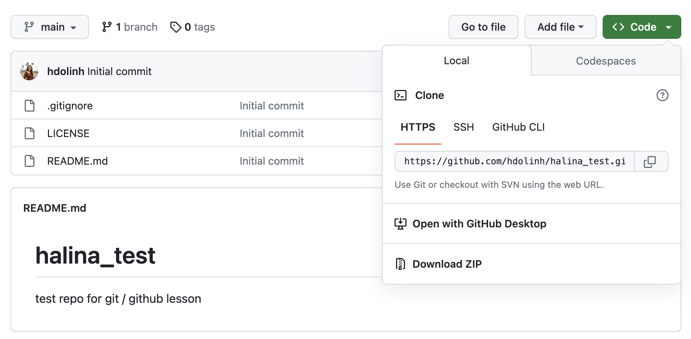

Learning Objectives
- How to use
Gitand GitHub to collaborate with colleagues on code - What typically causes conflicts when collaborating
- How to resolve a conflict
- Workflows to avoid conflicts
11.1 Introduction
Git is a great tool for working on your own, but even better for working with friends and colleagues. Git allows you to work with confidence on your own local copy of files with the confidence that you will be able to successfully synchronize your changes with the changes made by others.
The simplest way to collaborate with Git is to use a shared repository on a hosting service such as GitHub, and use this shared repository as the mechanism to move changes from one Collaborator to another. While there are other more advanced ways to sync git repositories, this “hub and spoke” model works really well due to its simplicity.
In this model, the Collaborator will clone a copy of the Owner’s repository from GitHub, and the Owner will grant them Collaborator status, enabling the Collaborator to directly pull and push from the Owner’s GitHub repository.
11.2 Collaborating with a trusted colleague without conflicts
We start by enabling collaboration with a trusted colleague. We will designate the Owner as the person who owns the shared repository, and the Collaborator as the person that they wish to grant the ability to make changes to their repository. We start by giving that person access to our GitHub repository.
- Get into pairs, then choose one person as the Owner and one as the Collaborator
- Both logon to GitHub
These next steps are for the Owner:
- Navigate to the
{FIRSTNAME}_testrepository - Go to “Settings” and navigate to “Collaborators” in the “Access” section on the left-hand side
- Under “Manage Access” click the button “Add people” and type the username of your Collaborator in the search box
- Once you’ve found the correct username, click “Add {Collaborator username} to this repository

Now, the Collaborator will follow this step:
- Check your email for an invitation to GitHub or check your notifications (likely under “Your Organizations”) on GitHub to accept the invite to collaborate.
We will start by having the Collaborator make some changes and share those with the Owner without generating any conflicts, In an ideal world, this would be the normal workflow. The instructors are going to demonstrate this in the next section.
Step 1: Collaborator clone
To be able to contribute to a repository, the Collaborator must clone the repository from the Owner’s GitHub account. To do this, the Collaborator should visit the GitHub page for the Owner’s repository, and then copy the clone URL. In R Studio, the Collaborator will create a new project from version control by pasting this clone URL into the appropriate dialog (see the earlier chapter introducing GitHub).

Step 2: Collaborator edit
With a clone copied locally, the Collaborator can now make changes to the README.md file in the repository, adding a line or statement somewhere noticeable near the top. Save your changes.
Step 3: Collaborator commit and push
To sync changes, the Collaborator will need to add, commit, and push their changes to the Owner’s repository. But before doing so, it’s good practice to pull immediately before committing to ensure you have the most recent changes from the Owner. So, in RStudio’s Git tab, first click the “Diff” button to open the Git window, and then press the green “Pull” down arrow button. This will fetch any recent changes from the origin repository and merge them. Next, add the changed README.Rmd file to be committed by clicking the check box next to it, type in a commit message, and click “Commit”. Once that finishes, then the Collaborator can immediately click “Push” to send the commits to the Owner’s GitHub repository.

Step 4: Owner pull
Now, the Owner can open their local working copy of the code in RStudio, and pull those changes down to their local copy.
Congrats, the Owner now has your changes!
Step 5: Owner edits, commit, and push
Next, the Owner should do the same. Make changes to a file in the repository, save it, pull to make sure no new changes have been made while editing, and then add, commit, and push the Owner changes to GitHub.
Step 6: Collaborator pull
The Collaborator can now pull down those Owner changes, and all copies are once again fully synced. And you’re off to collaborating.
Exercise: With a partner, collaborate in a repository using a conflict-free process
Now that the instructors have demonstrated this conflict-free process, break into pairs and try the same with your partner. You will do the exercise twice, where each person will get to practice being both the Owner and the Collaborator roles.
- Step 0: Designate one person as the Owner and one as the Collaborator.
Round One:
- Step 1: Owner adds Collaborator to
{FIRSTNAME}_testrepository (see Setup block above for detailed steps) - Step 2: Collaborator clones the Owner’s
{FIRSTNAME}_testrepository - Step 3: Collaborator edits the
READMEfile:- Collaborator adds a new level 2 heading to
READMEtitled “GitWorkflow”
- Collaborator adds a new level 2 heading to
- Step 4: Collaborator commits and pushes the
READMEfile with the new changes to GitHub - Step 5: Owner pulls the changes that the Collaborator made
- Step 6: Owner edits the
READMEfile:- Under “
GitWorkflow”, Owner adds the steps of theGitworkflow we’ve been practicing
- Under “
- Step 7: Owner commits and pushes the
READMEfile with the new changes to GitHub - Step 8: Collaborator pulls the
Ownerschanges from GitHub - Step 9: Go back to Step 0, switch roles, and then follow the steps in Round Two.
Round Two:
- Step 1: Owner adds Collaborator to
{FIRSTNAME}_testrepository - Step 2: Collaborator clones the Owner’s
{FIRSTNAME}_testrepository - Step 3: Collaborator edits the
READMEfile:- Collaborator adds a new level 2 heading to
READMEtitled “How to Create aGitRepository” and adds the high level steps for creating aGitrepository on GitHub
- Collaborator adds a new level 2 heading to
- Step 4: Collaborator commits and pushes the
READMEfile with the new changes to GitHub - Step 5: Owner pulls the changes that the Collaborator made
- Step 6: Owner edits the
READMEfile:- Under “How to Create a
GitRepository”, Owner adds the high level steps for creating aGitrepository from an existing project on RStudio
- Under “How to Create a
- Step 7: Owner commits and pushes the
READMEfile with the new changes to GitHub - Step 8: Collaborator pulls the
Ownerschanges from GitHub
Hint: If you don’t remember how to create a Git repository, refer to the chapter Intro to Git and GitHub where we created two Git repositories
11.3 Merge conflicts
So things can go wrong, which usually starts with a merge conflict, due to both collaborators making incompatible changes to a file. While the error messages from merge conflicts can be daunting, getting things back to a normal state can be straightforward once you’ve got an idea where the problem lies.
A merge conflict occurs when both the Owner and Collaborator change the same lines in the same file without first pulling the changes that the other has made. This is most easily avoided by good communication about who is working on various sections of each file, and trying to avoid overlaps. But sometimes it happens, and Git is there to warn you about potential problems. And Git will not allow you to overwrite one person’s changes to a file with another’s changes to the same file if they were based on the same version.

The main problem with merge conflicts is that, when the Owner and Collaborator both make changes to the same line of a file, Git doesn’t know whose changes take precedence. You have to tell Git whose changes to use for that line.
11.3.1 Common ways to resolve a merge conflict
1. Abort, abort, abort…
Sometimes you just made a mistake. When you get a merge conflict, the repository is placed in a “Merging” state until you resolve it. There’s a terminal command to abort doing the merge altogether:
git merge --abortOf course, after doing that you still haven’t synced with your Collaborator’s changes, so things are still unresolved. But at least your repository is now usable on your local machine.
2. Checkout
The simplest way to resolve a conflict, given that you know whose version of the file you want to keep, is to use the command line Git program to tell Git to use either your changes (the person doing the merge), or their changes (the Collaborator).
- keep your Collaborator’s file:
git checkout --theirs conflicted_file.Rmd - keep your own file:
git checkout --ours conflicted_file.Rmd
Once you have run that command, then run add (staging), commit, and push the changes as normal.
3. Pull and edit the file
But that requires the command line. If you want to resolve from RStudio, or if you want to pick and choose some of your changes and some of your Collaborator’s, then instead you can manually edit and fix the file. When you pull the file with a conflict, Git notices that there is a conflict and modifies the file to show both your own changes and your Collaborator’s changes in the file. It also shows the file in the Git tab with an orange U icon, which indicates that the file is Unmerged, and therefore awaiting your help to resolve the conflict. It delimits these blocks with a series of less than and greater than signs, so they are easy to find:

To resolve the conflicts, simply find all of these blocks, and edit them so that the file looks how you want (either pick your lines, your Collaborator’s lines, some combination, or something altogether new), and save. Be sure you removed the delimiter lines that started with
<<<<<<<,=======,- and
>>>>>>>.
Once you have made those changes, you simply add (staging), commit, and push the files to resolve the conflict.
11.4 Producing and resolving merge conflicts
To illustrate this process, the instructors are going to carefully create a merge conflict step by step, show how to resolve it, and show how to see the results of the successful merge after it is complete. First, the instructors will walk through the exercise to demonstrate the issues. Then, participants will pair up and try the exercise.
Step 1: Owner and Collaborator ensure all changes are updated
First, start the exercise by ensuring that both the Owner and Collaborator have all of the changes synced to their local copies of the Owner’s repository in RStudio. This includes doing a git pull to ensure that you have all changes local, and make sure that the Git tab in RStudio doesn’t show any changes needing to be committed.
Step 2: Owner makes a change and commits
From that clean slate, the Owner first modifies and commits a small change including their name on a specific line of the README.md file (we will change line 4). Work to only change that one line, and add your username to the line in some form and commit the changes (but DO NOT push). We are now in a situation where the Owner has unpushed changes that the Collaborator can not yet see.
Step 3: Collaborator makes a change and commits on the same line
Now the Collaborator also makes changes to the same (line 4) of the README.md file in their RStudio copy of the project, adding their name to the line. They then commit. At this point, both the Owner and Collaborator have committed changes based on their shared version of the README.md file, but neither has tried to share their changes via GitHub.
Step 4: Collaborator pushes the file to GitHub
Sharing starts when the Collaborator pushes their changes to the GitHub repo, which updates GitHub to their version of the file. The Owner is now one revision behind, but doesn’t know it yet.
Step 5: Owner pushes their changes and gets an error
At this point, the Owner tries to push their change to the repository, which triggers an error from GitHub. While the error message is long, it basically tells you everything needed (that the Owner’s repository doesn’t reflect the changes on GitHub, and that they need to pull before they can push).

Step 6: Owner pulls from GitHub to get Collaborator changes
Doing what the message says, the Owner pulls the changes from GitHub, and gets another, different error message. In this case, it indicates that there is a merge conflict because of the conflicting lines.

In the Git pane of RStudio, the file is also flagged with an orange U, which stands for an unresolved merge conflict.

Step 7: Owner edits the file to resolve the conflict
To resolve the conflict, the Owner now needs to edit the file. Again, as indicated above, Git has flagged the locations in the file where a conflict occurred with <<<<<<<, =======, and >>>>>>>. The Owner should edit the file, merging whatever changes are appropriate until the conflicting lines read how they should, and eliminate all of the marker lines with <<<<<<<, =======, and >>>>>>>.

Of course, for scripts and programs, resolving the changes means more than just merging the text – whoever is doing the merging should make sure that the code runs properly and none of the logic of the program has been broken.

Step 8: Owner commits the resolved changes
From this point forward, things proceed as normal. The Owner first add the file changes to be made, which changes the orange U to a blue M for modified, and then commits the changes locally. The Owner now has a resolved version of the file on their system.

Step 9: Owner pushes the resolved changes to GitHub
Have the Owner push the changes, and it should replicate the changes to GitHub without error.

Step 10: Collaborator pulls the resolved changes from GitHub
Finally, the Collaborator can pull from GitHub to get the changes the Owner made.
Step 11: Both can view commit history
When either the Collaborator or the Owner view the history, the conflict, associated branch, and the merged changes are clearly visible in the history.

Exercise: With a partner, collaborate in a repository and resolve a merge conflict
Now it’s your turn. In pairs, intentionally create a merge conflict, and then go through the steps needed to resolve the issues and continue developing with the merged files. See the sections above for help with each of the steps below. You will do the exercise twice, where each person will get to practice being both the Owner and the Collaborator roles.
- Step 0: Designate one person as the Owner and one as the Collaborator.
Round One:
- Step 1: Both Owner and Collaborator
pullto ensure both have the most up-to-date changes - Step 2: Owner edits the
READMEfile and makes a change to the title and commits do not push - Step 3: On the same line, Collaborator edits the
READMEfile and makes a change to the title and commits - Step 4: Collaborator pushes the file to GitHub
- Step 5: Owner pushes their changes and gets an error
- Step 6: Owner pulls from GitHub to get Collaborator changes
- Step 7: Owner edits the
READMEfile to resolve the conflict - Step 8: Owner commits the resolved changes
- Step 9: Owner pushes the resolved changes to GitHub
- Step 10: Collaborator pulls the resolved changes from GitHub
- Step 11: Both view commit history
- Step 12: Go back to Step 0, switch roles, and then follow the steps in Round Two.
Round Two:
- Step 1: Both Owner and Collaborator
pullto ensure both have the most up-to-date changes - Step 2: Owner edits the
READMEfile and makes a change to line 2 and commits do not push - Step 3: On the same line, Collaborator edits the
READMEfile and makes a change to line 2 and commits - Step 4: Collaborator pushes the file to GitHub
- Step 5: Owner pushes their changes and gets an error
- Step 6: Owner pulls from GitHub to get Collaborator changes
- Step 7: Owner edits the
READMEfile to resolve the conflict - Step 8: Owner commits the resolved changes
- Step 9: Owner pushes the resolved changes to GitHub
- Step 10: Collaborator pulls the resolved changes from GitHub
- Step 11: Both view commit history
11.5 Workflows to avoid merge conflicts
Some basic rules of thumb can avoid the vast majority of merge conflicts, saving a lot of time and frustration. These are words our teams live by:

- Communicate often
- Tell each other what you are working on
- Start you working session with a pull
- Pull immediately before you commit or push
- Commit often in small chunks
- Make sure you and who your collaborating with all fully understand the
Gitworkflow you’re using aka make sure you’re on the same page before you start!
A good workflow is encapsulated as follows:
Pull -> Edit -> Save -> Add (stage) -> Pull -> Commit -> Push
Always start your working sessions with a Pull to get any outstanding changes, then start your work. Stage your changes, but before you Commit, Pull again to see if any new changes have arrived. If so, they should merge in easily if you are working in different parts of the program. You can then Commit and immediately Push your changes safely.
Good luck, and try to not get frustrated. Once you figure out how to handle merge conflicts, they can be avoided or dispatched when they occur, but it does take a bit of practice.